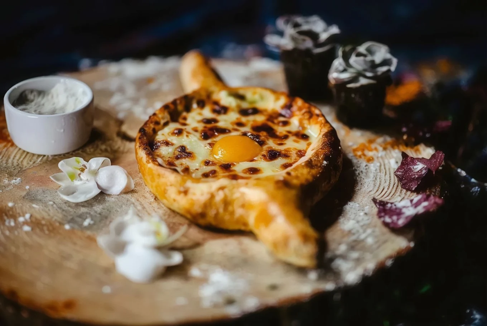
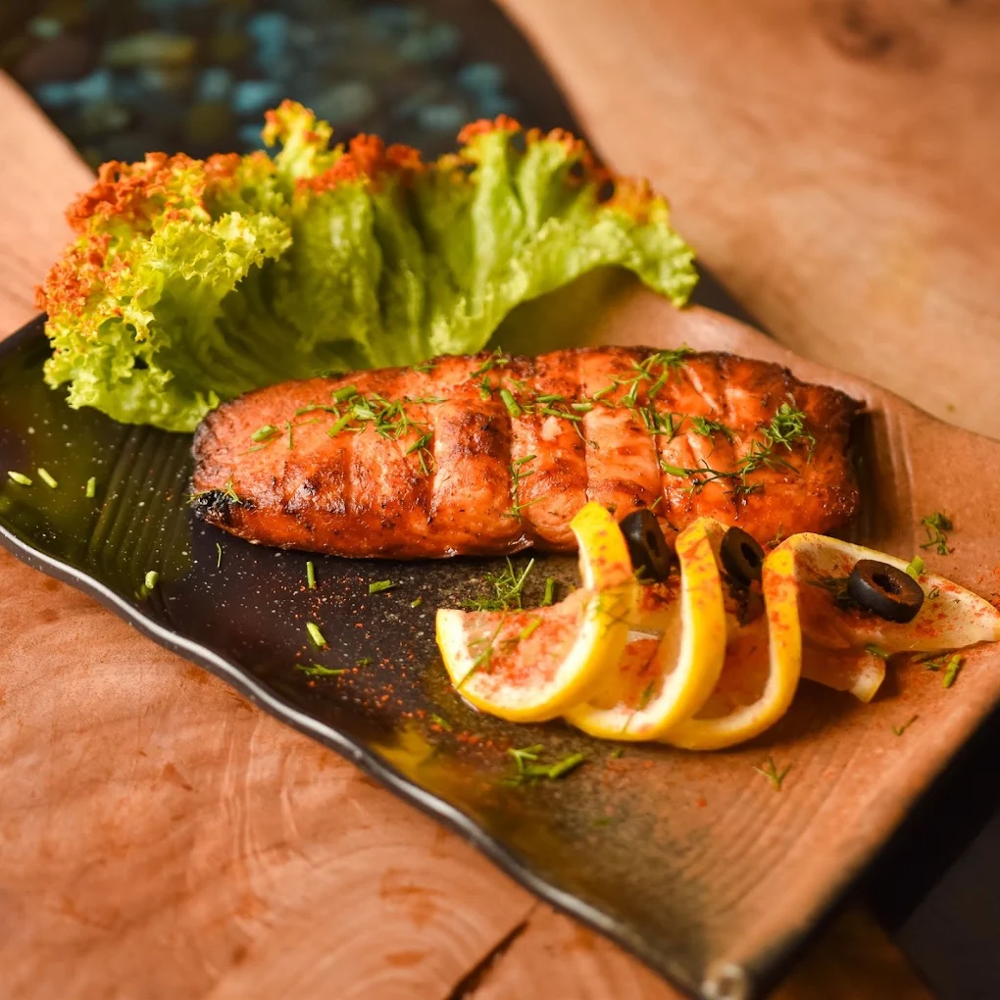
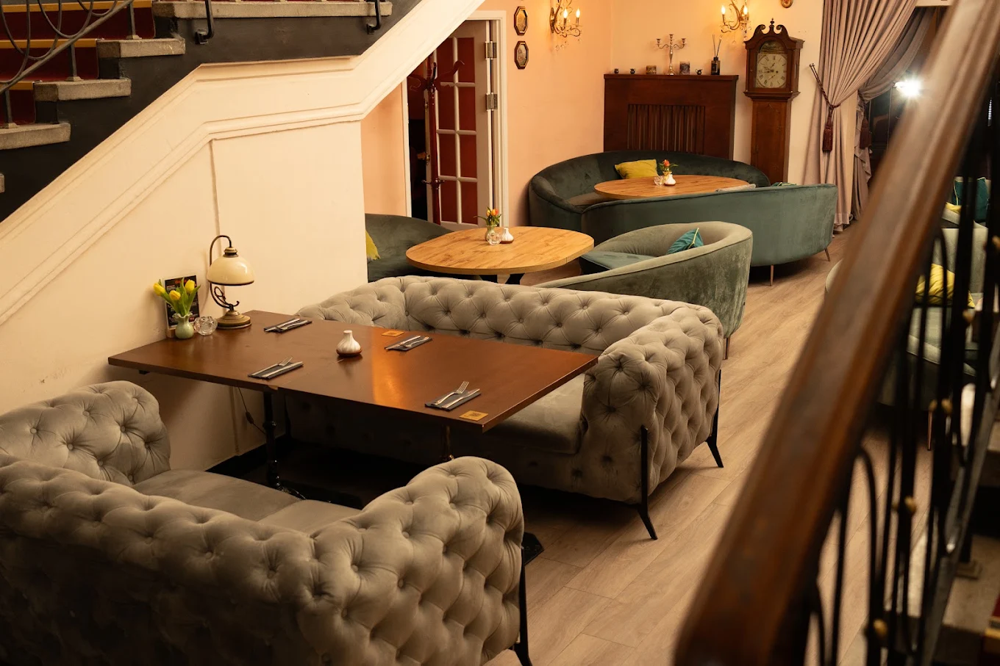

Bestsellerაჭარული ხაჭაპური
Adjarian Khachapuri
A boat of crisp dough filled with melted cheese, served with an egg. Our bestseller.
Authentic Georgian cuisine · Warsaw
Khachapuri, khinkali, grilled shashlik, Georgian wine and live music — opposite the US Embassy on Al. Ujazdowskie.
Hours
Mon – Sun · 11:00 – 23:00
Live music & dancing at weekends
Our kitchen
The classics our guests come back for — prepared in the Georgian tradition.

Bestsellerაჭარული ხაჭაპური
A boat of crisp dough filled with melted cheese, served with an egg. Our bestseller.
ხინკალი
Georgian dumplings with a juicy filling and broth inside — with beef, lamb, turkey, cheese or salmon, among others.

ბადრიჯანი ნიგვზით
Aubergine rolls with walnut sauce, aubergine rolls with cheese and pepper rolls with walnut sauce.

ორაგული
For those who prefer fish to meat — salmon from Gaga's Georgian menu.
Our story
Georgian hospitality on Al. Ujazdowskie, opposite the US Embassy.


Al. Ujazdowskie 6AWarsaw
Welcome to Gaga — a Georgian restaurant in the very heart of Warsaw, on one of the city's most beautiful avenues.
We cook in the Georgian tradition and with a heart you can taste in every dish. The menu has khachapuri in several versions, khinkali with a range of fillings, shashlik and grilled dishes, plus Georgian wine — from a country with one of the oldest winemaking traditions in the world.
The room invites you to stay a little longer — soft velvet sofas, the warm glow of lamps and an old clock that never rushes anyone. Guests can also sit in our garden among the greenery of Al. Ujazdowskie.
At weekends it gets livelier: there's live music and traditional Georgian dancing. Because in Georgia a shared table is more than a meal — it's a supra, a feast where every guest is a gift from God.
4.6★
Google rating
over 1,600 reviews
7
days a week
11:00 to 23:00
2–30
guests per
online booking
4
Gaga restaurants
in Warsaw
სტუმარი ღვთისაა
“A guest is a gift from God”
— Georgian proverb
Evenings at Gaga
At weekends Gaga turns into a Georgian supra — a feast where nobody stays in their seat for long.
Musicians play live and traditional Georgian dancing fills the room. You'll find upcoming events and clips from our evenings on Instagram.
Live music
On weekend evenings
Georgian dancing
Traditional dances in the dining room
Upcoming events
Guest reviews
Over 1,600 reviews on Google — thank you for every one of them.
★★★★★
“We could barely walk out… we ate so much. Delicious food and very generous portions.”
★★★★★
“Delicious Georgian food. Excellent falafel, and the classic lamb kebab is out-of-this-world seasoned.”
Reservations
Your table is waiting. Pick a day, a time and the number of guests — you'll complete the booking on MojStolik.pl.
We take bookings for 2–30 guests through MojStolik.pl and confirm them promptly during opening hours.
At weekends the room fills up fast — book in advance.
We have a private room and a garden. For a larger group, mention it in the booking notes.
How to find us
On Al. Ujazdowskie, opposite the US Embassy — a few minutes' walk from Three Crosses Square.
Opening hours
Reservations
MojStolik.plPhone
+48 726 504 760Order delivery
Follow us
Al. Ujazdowskie 6A
The Google map loads only when you click. Google will then receive your IP address.
or open in Google Maps